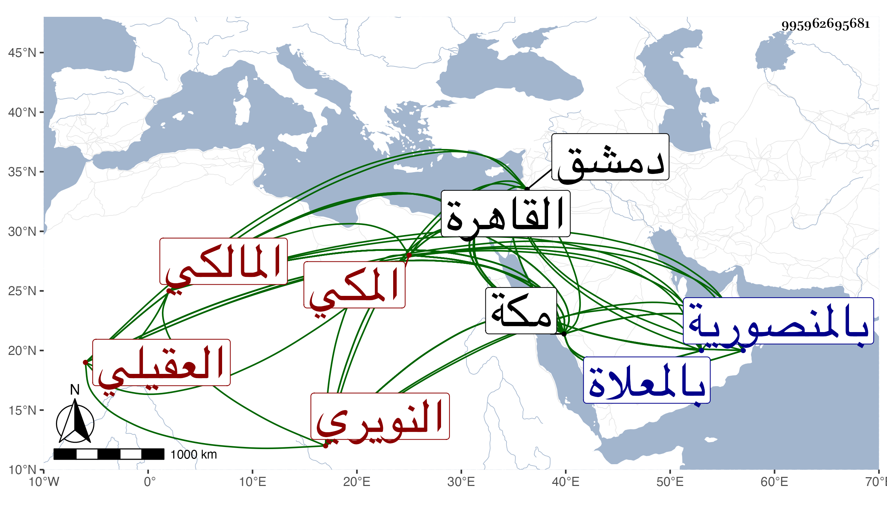

0902Sakhawi.DawLamic.ITO20230111-ara1.EIS1600.995962695681
Biography ID: 995962695681
32
علي بن محمد بن محمد بن علي بن أحمد بن عبد العزيز بن القسم بن عبد الرحمن الشهيد الناطق أبي القسم بن عبد الله نور الدين أبو الحسن بن الأمين أبي اليمن بن الجمال أبي الخير العقيلي النويري المكي المالكي أخو عمر الآتي وأبوهما وأمه عيناء المدعوة توفيق ابنة أحمد جار الله بن زائد السنبسي ويعرف بابن أبي اليمن . ولد في شعبان سنة خمس عشرة وثمانمائة بمكة ونشأ بها فحفظ القرآن والعمدة والشاطبية والرسالة لابن أبي زيد ومختصر ابن الحاجب الفرعي والتنقيح للقرافي وألفية ابن ملك وعرض على عمه التقي الفاسي وهو الملتمس من أبيه أن يكون مالكيا وإلا فأبوه فمن فوقه شافعية وكذا عرض على الجمال الكازروني وأبي الحسن سبط الزبير ويوسف بن محمد الزرندي وابن سلامة وابني المرشدي والجمال الشيبي وغيرهم ممن أجاز وتلا لأبي عمر ومن طريقيه على الشيخ محمد الكيلاني والشوائطي وتفقه في بلده بأبي الطاهر المراكشي والبساطي وراسله ثانيهما بالإذن له في الإفتاء والتدريس على ما قرأته بخطه قال : وقد لازمني مدة وقرأ علي جملة من الفقه قراءة تحقيق وتدقيق وإيراد أسئلة لا تحصل إلا ممن هو موسوم بالفقه حقيق وبأحمد بن محمد الماقري عرف بالمصمودي وأحمد اللجائي في آخرين وأخذ العربية عن الجلال المرشدي والشمس بن حامد الصفدي والقاياتي وغيرهم كالشمني وعنه أخذ في أصول الفقه وقرأ عليه شرح النخبة لوالده وأذن له في الإقراء وقرأ شرح الشواهد للعيني على مصنفه وقال أنها قراءة بحث وتحقيق وفحص عن كل ما فيه من التدقيق بحيث صار ممن يؤخذ عنه هذا الكتاب وممن يتصدى إلى إقرائه بلا ارتياب ثم أذن له ، وكذا أخذ أصول الفقه أيضا عن أبي القسم النويري وإمام الكاملية والتقي الحصني والمعاني والبيان عن النويري والتصوف عن البلاطنسي قرأ عليه مختصره لمنهاج العابدين مع كتاب شيخه العلاء البخاري في الرد على ابن عربي وصحب الشيخ مدين وغيره والحديث عن شيخنا رواية ودراية فمما قرأه عليه شرح النخبة والخصال المكفرة وبذل الماعون وغيرها من تآليفه والترغيب للمنذري وغيره من مروياته وسمع عليه جملة وأذن له في الإقراء غير ما مرة وبالغ في وصفه حتى كتب له مفخر أهل عصره في مصره ، وكان شيخنا كثير الميل إليه ونقل عنه في حوادث تاريخه وقرأ على أبي الفتح المراغي الكثير وعلى والده والمقريزي والزين والزركشي والمحب بن نصر الله الحنبلي والعز بن الفرات والبدر النسابة وغيرهم بل كان سمع قبل ذلك من جده محمد بن علي وابن سلامة والجمال المرشدي والشمس البرماوي وحسين الهندي وأحمد بن محمود في آخرين ، وأجاز له من القاهرة ابن الكويك والجمال الحنبلي وابن عمه الشمس الشامي والعز بن جماعة والجلال البلقيني والولي العراقي وأبو هريرة بن النقاش والزراتيتي والمجد البرماوي وحماد التركماني والفوي والحبتي والفخر الدنديلي والصدر السويفي والسراج قاري الهداية والشمس محمد بن حسن البيجوري وطائفة من دمشق النجم بن حجي ومحمد بن محمد بن المحب المقدسي وابن طولوبغا وغيرهم ومن مكة أحمد بن الضياء والمرجاني وآخرون ، وقدم القاهرة مرارا أولها في سنة اثنتين وأربعين وآخرها في سنة ستين وناب في القضاء عن أبي عبد الله النويري بمرسوم من الأشرف في سنة أربعين ثم عن والده في سنة ثلاث وأربعين ، وولي تدريس الحديث بالمنصورية بمكة تلقاه عن عم أبيه العز النويري وما باشره إلا في تسع وأربعين وكذا باشر الإمامة بمقام المالكية نيابة مدة عشر سنين ثم ترك ثم عاد وتصدى للإقراء من سنة ثمان وثلاثين وخطب لقضاء المالكية بمكة فاستقر في ربيع الأول سنة ثمان وستين ولم يلبث أن صرف عنه في جمادى الأولى منها وتألم أحبابه لذلك خصوصا والذي صرف به شاب ، ولكن لم يلبث أن توفي بعد أشهر وعد ذلك في النفسيات عنه ثم أعيد في شوال سنة خمس وسبعين ثم انفصل ثم أعيد في شوال سنة إحدى وثمانين ولكن احتيل في إخفائه إلى ربيع الأول واستمر على القضاء حتى مات ، وكان مصمما في قضائه على نصر الضعيف وإغاثة الملهوف وتلصق به أشياء سخيفة وألفاظ ظريفة بعضها ثابتة ، وهو من قدماء الأحباب كتبت عنه من فوائده ووصفني بحافظ العصر وغير ذلك وحضر لي عدة مجالس بمكة ونعم الرجل علما وتفننا وفصاحة وتواضعا وشهامة على أعدائه وعدم انقياد لهم وحرصا على الطواف والتلاوة والتودد للغرباء ومواساتهم جهده ولكنه لم يسلم من لسانه فيما قيل إلا القليل ولولا محبتي فيه لزدت نعم طولتها في موضع آخر . مات في ليلة السبت سادس عشر ربيع الأول سنة اثنتين وثمانين وصلي عليه صبيحة الغد ودفن بالمعلاة عند قبورهم وتأسف أهل الخير على فقده ورثاه الشهاب بن العليف وغيره رحمه الله وإيانا .
